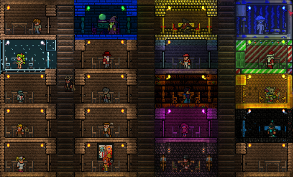
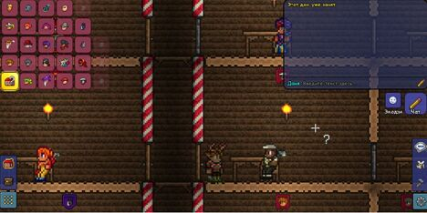

НИПы
НИП (от англ. «Non-Playable Character» — «Не игровой Персонаж», NPC) — персонаж, служащий важным средством создания игровой атмосферы и мотивирующий игроков совершать те или иные действия. Основным требованием для каждого НИПа является наличие пустого дома. Всего существует 28 НИПов, 25 из которых можно поселить. С версии 1.4.0.1 каждый НИП имеет уровень счастья. Его можно узнать, если нажать специальную кнопку в окне диалога.
Домом считается помещение, которое имеет стены (включая фоновые; данжевые и земляные стены считаются лишь при условии, что их установил сам игрок), плоский предмет (на который может встать игрок, например стол), предмет комфорта (стул) и источник света (факел). Минимальный размер дома — 8 × 4 блока свободного пространства, то есть 10 × 6 вместе со стенами, также в стенах не должно быть пробелов. Кроме того, нельзя заселить НИПов в дом, расположенный рядом с Кримзоном или Искажением. Символом занятости дома является значок с головой НИПа в профиль, отображающийся внутри подходящего под перечисленные условия помещения. Если этот НИП не пришёл сам, его нужно отыскать (в том числе на Летающем острове), и поговорить.

Каждый НИП имеет свой уровень счастья. Он влияет на цены в магазине, а так же на то, будет ли НИП продавать пилон. На уровень счастья влияет то, в каком биоме у НИПа дом и то, какие у него соседи. Узнать его можно нажав на кнопку "Счастье".
Также важно знать, что НИПы не любят очень много соседей, даже если среди них есть любимые. Это может помешать покупке пилонов, так что делайте расстояния между домами НИПов, которые не соответствуют предпочтениям.
Дом, просмотр дома
Для проверки дома, нужно зайти в инвентарь, над слотами брони нажать на изображение дома, нажать на иконку того или иного НИПа (на иконку того НИПа который живёт в одном из ваших домов) и переместить её в дом, в который вы хотели бы переселить того НИПа, иконку которого вы нажали.

Помимо этого, можно выбрать [?] и нажать на определённый дом: в игровом чате напишется, чего не хватает в выбранном вами доме.